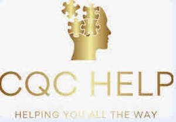

Trade Mark Journal No.2025/033 15 August 2025
UK00004207932 23 May 2025 (35,41,44)

- Class 35
- Consultancy relating to business efficiency; Consultancy relating to business document management; Business management supervision; Management administration of commercial undertakings; Business consultancy services relating to the supply of quality management systems; Provision of computerised business management information; Organization, operation and supervision of loyalty and incentive schemes; Administrative management of health care clinics; Management of health care clinics for others; Business organisation consultancy; Business management and organisation consultancy services; Business management and organisation consultancy; Business management organisation consultancy; Business organisation and management consultancy; Management consultancy services; Business recruitment consultancy; Employment consultancy services; Corporate management consultancy services; Business consultancy and advisory services; Business advisory and consultancy services; Consultancy relating to business organisation; Consultancy relating to business management and organisation; Business consultancy; Business management consultancy and advisory services; Business consultancy services; Business organisation and management consulting services; Business management and consultancy services; Business management consultancy services; Business organisation consulting; Corporate management consultancy; Business management and consultancy; Business management consultancy; Business organisation and management consulting; Business consultancy to firms; Consultancy and advisory services relating to business management; Professional business consultancy services; Business management and organization consultancy services; Consultancy and advisory services relating to personnel recruitment; Business management consultancy via the Internet; Business administration consultancy; Consultancy relating to business management; Personnel management and employment consultancy.
- Class 41
- Consultancy services relating to the analysis of training requirements; Training services relating to health and safety; Setting of training standards; Training services relating to business management; Health education; Education services relating to health; Management training consultancy services.
- Class 44
- Health risk assessment; Health care; Advisory services relating to health care; Consultancy relating to health care; Advisory services relating to health; Health centers; Managed health care services; Health risk assessment surveys; Preparation of reports relating to health care matters; Information relating to health; Technical consultancy services relating to medical health; Professional consultancy relating to health; Providing health information; Health advice and information services; Health consultancy; Healthcare consultancy services; Medical consultancy services; Cosmetics consultancy services; Consultancy services relating to surgery.
Aditya Kohli